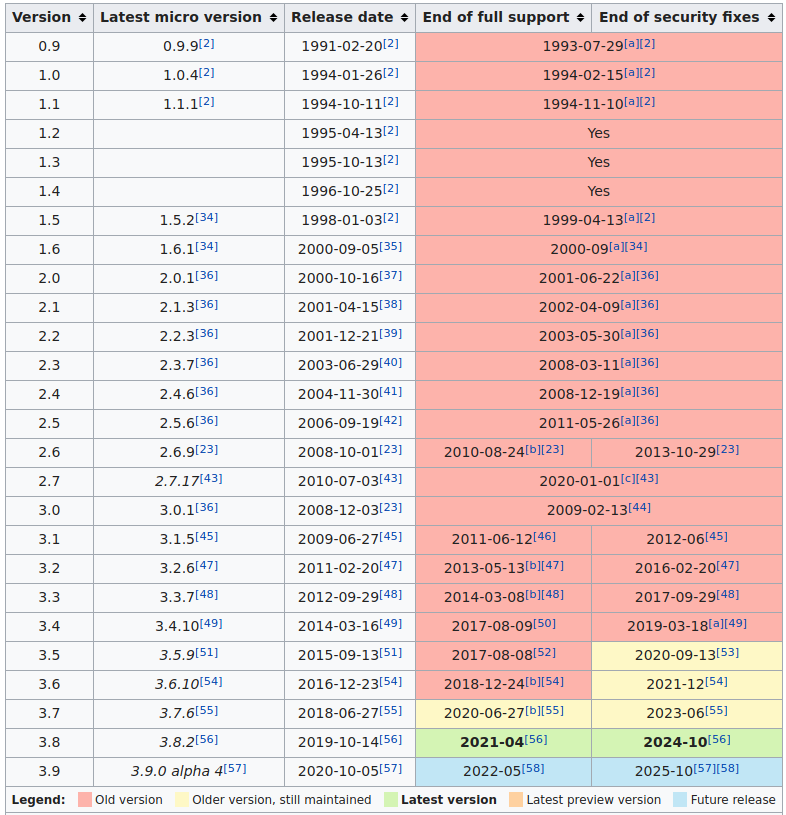
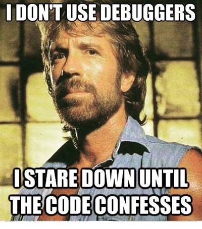

Python Features 3.5 =>
Novedades del lenguaje desde la versión 3.5 hasta 3.8
Jose Alberto Torres
 @jata1984
@jata1984
 @jata84
@jata84
Soporte para versiones de python
Python 3.5
PEP 492: Corutinas y sintaxis async await
PEP 484: Typehints
PEP 498: Formatted string literals
PEP 492: Corutinas y sintaxis async await
Declaración de corutinas con async
Gestores de contexto asincronos:
async with session.transaction():
await session.update(data)
PEP 484: Typehints
Tipo Callables
from typing import Callable
def feeder(get_next_item: Callable[[], str]) -> None:
pass
Determina que el tipo función
Permite determinar los tipos de los argumentos de la función y sus respuestas
PEP 484: Typehints
Tipo Any
from typing import Mapping
def use_map(m: Mapping[Any,Any]) -> None:
pass
El type Checker permitirá cualquier operación sobre ese valor
PEP 484: Typehints
Tipo Union
from typing import Union
def handle_employees(e: Union[Employee, Sequence[Employee]]) -> None:
if isinstance(e, Employee):
e = [e]
Permitirá cualquiera de los dos valores introducidos dentro de la unión
PEP 498: Literal String Interpolation
F-strings, formato de cadenas simple
Python 3.6
PEP 515: Underscores in Numeric Literals
PEP 526: Syntax for Variable Annotations
Python 3.6
PEP 515: Underscores in Numeric Literals
# grouping decimal numbers by thousands
amount = 10_000_000.0
# grouping hexadecimal addresses by words
addr = 0xCAFE_F00D
# grouping bits into nibbles in a binary literal
flags = 0b_0011_1111_0100_1110
# same, for string conversions
flags = int('0b_1111_0000', 2)
Python 3.6
PEP 526: Syntax for Variable Annotations
python_version : float = 3.6
python_releases_numbers : int = 100
Python 3.7
PEP 553: Built-in breakpoint()
PEP 567: Context Variable
PEP 557: Data Classes
Python 3.7
PEP 553: Built-in breakpoint()
Python 3.7
PEP 553: Built-in breakpoint()
En python tenemos los debugger: pdb, ipdb,pudb pdbpp
Se puede configurar con variables de entorno
Python 3.7
PEP 567: Context Variable
Al pertenecer al mismo hilo es necesario un mecanismo de almacenamiento de variables
Python 3.7
PEP 557: Data Classes
Python 3.8
PEP 572: Assignment Expressions
PEP 570: Positional Arguments
Python 3.7
PEP 572: Assignment Expressions (walrus operator)
:=
Python 3.8
PEP 572: Assignment Expressions (walrus operator)
Python 3.8
PEP 570: Positional Arguments